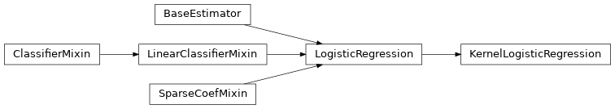

wildboar.linear_model¶
Classes¶
KernelLogisticRegression: A simple kernel logistic implementation using a Nystroem kernel approximation
-
class
wildboar.linear_model.KernelLogisticRegression(kernel=None, *, kernel_params=None, n_components=100, penalty='l2', dual=False, tol=0.0001, C=1.0, fit_intercept=True, intercept_scaling=1, class_weight=None, random_state=None, solver='lbfgs', max_iter=100, multi_class='auto', verbose=0, warm_start=False, n_jobs=None, l1_ratio=None)¶ A simple kernel logistic implementation using a Nystroem kernel approximation
Warning
This kernel method is not specialized for temporal classification.
See also
wildboar.datasets.outlier.EmmottLabelerSynthetic outlier dataset construction
Create a new kernel logistic regression
- Parameters
kernel (str, optional) – The kernel function to use. See sklearn.metrics.pairwise.kernel_metric for kernels. The default kernel is ‘rbf’.
kernel_params (dict, optional) – Parameters to the kernel function.
n_components (int, optional) – Number of features to construct
Inheritance
-
decision_function(x)¶ Predict confidence scores for samples.
The confidence score for a sample is proportional to the signed distance of that sample to the hyperplane.
- Parameters
X (array-like or sparse matrix, shape (n_samples, n_features)) – Samples.
- Returns
Confidence scores per (sample, class) combination. In the binary case, confidence score for self.classes_[1] where >0 means this class would be predicted.
- Return type
array, shape=(n_samples,) if n_classes == 2 else (n_samples, n_classes)
-
fit(x, y, sample_weight=None)¶ Fit the model according to the given training data.
- Parameters
X ({array-like, sparse matrix} of shape (n_samples, n_features)) – Training vector, where n_samples is the number of samples and n_features is the number of features.
y (array-like of shape (n_samples,)) – Target vector relative to X.
sample_weight (array-like of shape (n_samples,) default=None) –
Array of weights that are assigned to individual samples. If not provided, then each sample is given unit weight.
New in version 0.17: sample_weight support to LogisticRegression.
- Returns
Fitted estimator.
- Return type
self
Notes
The SAGA solver supports both float64 and float32 bit arrays.